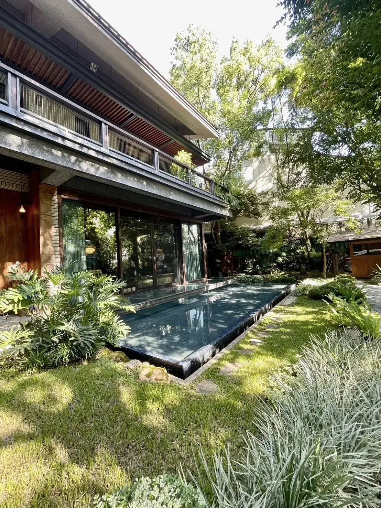

豪宅本身的空間條件已經很出色，很多人辦派對時反而只想著「食材要多高級」，卻忽略了動線與節奏才是決定賓客體驗的關鍵，這也是豪宅派對最容易落入俗套的地方。
豪宅通常有多個公共空間，派對前建議先規劃迎賓區、用餐區與交誼區的動線，避免賓客聚集在同一角落，也讓料理呈現有更多發揮空間。
豪宅生日派對常見的問題是「太隆重顯得刻意，太簡單又浪費場地優勢」，建議以壽星的年齡與交友圈調性決定風格，而不是單純比照商務宴客的規格。
派對型態的餐飲通常會拆成迎賓小點、正式用餐與後段社交茶點三個階段，跟坐下來一次吃完的家宴邏輯不同，需要主廚依現場人流彈性調整出餐時間。
舒苑團隊處理過多場豪宅家宴與生日派對，能依空間條件規劃完整動線與菜單，可以參考豪宅私廚頁面了解實際案例。
如果你正在規劃豪宅派對或豪宅生日派對，歡迎直接聯繫舒苑團隊，會有專人依你的空間條件與賓客組成提供更詳細的建議。
提供活動日期、人數與場地，我們將提供最適合的私廚方案與報價建議。